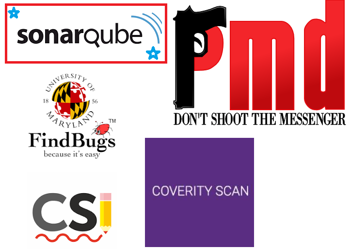

In this article, I present the reasons why SonarQube is best for performing static code analysis. Further, you can find a demonstration on how to execute SonarQube for a Visual Studio Project.

The reasons are given as below:
1. First, SonarQube is almost able to detect all the types of quality issues.
2. It is easy to learn and apply an object oriented Project by following some steps.
3. Note that each type of static code analysis tool has special design to detect different quality issues.
Follow the instructions below to perform a static code analysis on sonarqube.
1. Go to https://docs.sonarqube.org/latest/try-out-sonarqube/, after that , to execute Sonarqube, you first download .zip file from sonarqube web site through this link: https://www.sonarqube.org/downloads/
2. Unzip file to C: folder.
Execute C:\sonarqube\bin\windows-x86-64\StartSonar.bat on “cmd” command promt as below:
3. Go to http://localhost:9000 using a web browser and the user credentials are default : user:admin pass:admin.
4. Click “crate Project” to start new static code analysis as below:
5. Enter the Project name in that screen as below:
6. If you have a Visual Studio Project select “Locally” in the next screen as below:
7. “Generate” token as below: